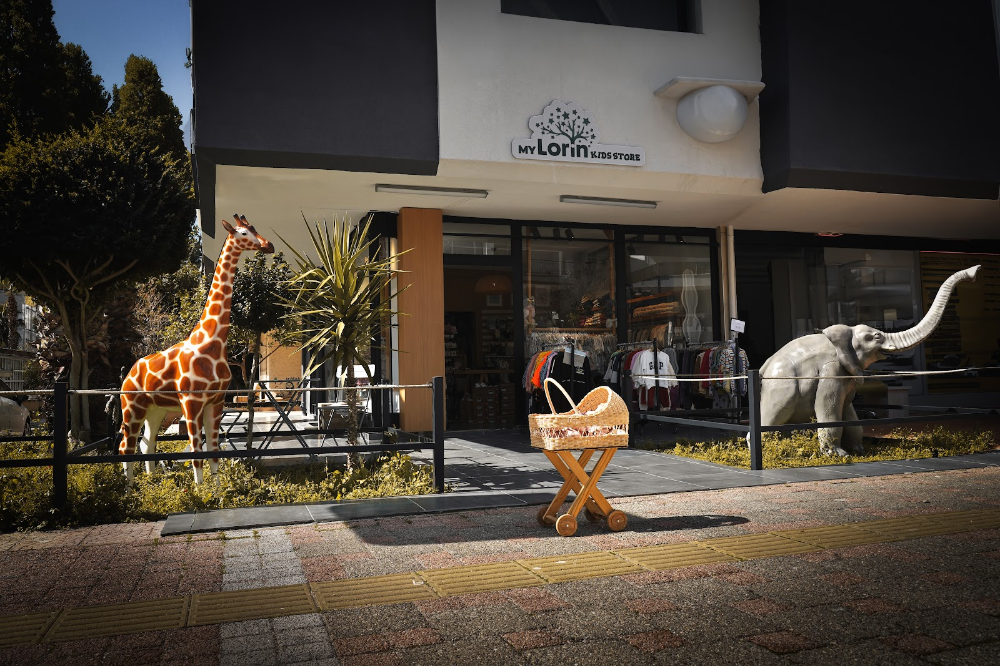
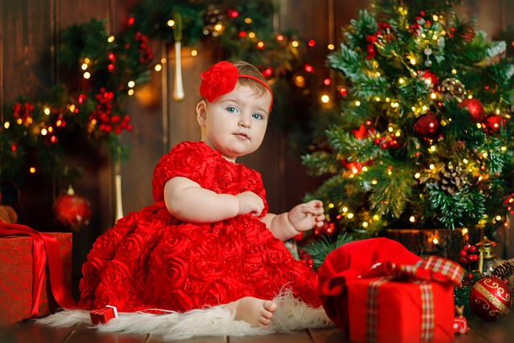

Beden seçin
1
🌿 Bakım: ters çevirip 30 °C'de, parfümsüz deterjanla yıkayın. Fiyat ve stok için mağazaya danışın.

Yeni doğandan 12 yaşa kadar: nefes alan kumaşlar, her yaşa uygun modeller ve hediye paketiyle Konyaaltı'nın samimi çocuk butiği.
Nefes alan kumaşlarPamuk, müslin, örme
Beden danışmanlığıYaşa ve boya göre öneri
Hediye paketiKartlı, özenli paketleme
WhatsApp'tan siparişSor, ayırt, gel al
Kategoriler
Bir kategoriye dokunun, katalog o ürünlerle açılsın.
Ürün kataloğu
Bedeni seçip sepete ekleyin; sepetiniz tek tıkla WhatsApp'tan mağazaya gitsin. Ayırtıp mağazadan alabilir ya da teslimat isteyebilirsiniz.
Aramanıza uygun ürün bulunamadı. Bize yazın, mağazada olanı fotoğraflayıp gönderelim →
Örnek katalog. Mağazanızdaki gerçek ürünler, fiyatlar ve beden stoğu panelden ya da Instagram paylaşımlarınızdan otomatik eklenir; istenirse kartla online ödeme açılır.
Sağlıklı seçim
Minik tenler yetişkin teninden çok daha ince ve hassastır. Raflarımızdan ürün seçerken sizinle birlikte şu 6 noktaya bakıyoruz.
Pamuk, müslin ve bambu karışımlar teri emer, cildi havalandırır. Isı döküntüsü ve pişik riskini azaltmaya yardımcı olur.
İçte kabarık dikiş ve sert etiket kızarıklık yapabilir. Yumuşak dikişli, etiketi yanda ya da baskılı modelleri öneriyoruz.
Küçük parçalar sıkıca tutturulmuş olmalı. Çıtçıtlı ve önden açılan modeller hem güvenli hem bez değişiminde pratik.
İlk aylarda açık renkli, büyük baskısız ürünler hem daha yumuşak hem de yıkamada daha az renk verir.
Yeni kıyafeti giydirmeden önce parfümsüz, bebek deterjanıyla 30–40 °C'de bir kez yıkayın; yumuşatıcıyı az kullanın.
Bebek sizden bir kat fazla giyinir. Ense ve sırtına dokunarak terleyip terlemediğini kontrol etmek en kolay yöntemdir.
Ürün etiketindeki içerik bilgisini mağazada ya da WhatsApp'tan fotoğrafla birlikte gösterelim; hassas cilt ve alerji durumunu bize yazın.
Beden rehberi
Çocuk bedenleri boy (cm) ile ölçülür. Yaşı ya da boyu girin, önerilen bedeni görün. Bir beden büyük almak isterseniz "büyüme payı"nı açın.
18–24 ay için
| Yaş | Beden | Boy (cm) |
|---|
Markaya göre kalıplar küçük farklar gösterebilir; emin olamazsanız mağazada denemeye ya da ölçüyle WhatsApp'tan sormaya davetlisiniz.
Büyüme takvimi
Bebeğiniz büyürken gardırobu da değişir. Hangi dönemde neye ihtiyaç olduğunu kısaca özetledik.
Yeni doğan hazırlık listesi
İşaretledikleriniz bu cihazda kayıtlı kalır. Eksiklerinizi tek tıkla bize gönderin; mağazada hazır edelim.
Antalya'da kaç kat?
Akdeniz sıcağında fazla giydirmek de üşütmek kadar rahatsız eder. Bebeklerde genel kural: sizden bir kat fazla.
İnce pamuk body ya da askılı tulum, şapka. Güneşte uzun kalmayın.
Kısa kollu body üstüne ince hırka ya da müslin örtü.
Uzun kollu body, tulum, ince mont; çorap ve bere.
Body, tulum, polar ve mont; eldiven ve kalın bere.
Hediye paketi
Doğum günü, yeni doğan ziyareti, bayram ya da karne hediyesi… Yaşı ve bütçeyi seçin, size 2–3 kombin önerisini fotoğraflarıyla gönderelim. Paket ve not kartı bizden.

Mağazamız
Mağazanın önündeki zürafa ve fil, minik misafirlerimizin favorisi. Fotoğrafa dokunun, büyüsün.
Google yorumları
49 Google yorumu
★★★★★“Kızıma yıllardır severek alışveriş yaptığım bir yer. Ürünler çok kaliteli ve uygun fiyatlı. AVM yerine kesinlikle yerli markalar ve butikler tercih edilmeli.”
GGözde · Google
★★★★★“İstanbul'da yaşıyorum, Antalya'ya tatile geldiğimde tesadüfen gördüğüm mağazaydı. İçeri girince çok güzel çocuk elbiseleri olduğunu gördüm; fiyat olarak piyasaya göre hem çok uygun hem de kaliteleri çok güzel.”
SSibel T. · Google
★★★★★“Evet! Harika bir mağaza. Bir şey almadan çıkamadım. Ve her yaşa uygun. Mükemmel 🤩”
NNatalia G. · Google
Sık sorulanlar
Burada cevabını bulamadığınız her şeyi WhatsApp'tan sorabilirsiniz; asistanımız 7/24 karşılar, ekibimiz mesai saatinde döner.
Sepeti WhatsApp'tan gönderdiğinizde bedeni ve stoğu kontrol edip size dönüyoruz. Ürünleri mağazadan alabilir ya da teslimat seçeneğini konuşabilirsiniz.
Beden rehberindeki öneriyi kullanın ya da çocuğunuzun boyunu bize yazın. Mağazada denemeye de her zaman bekleriz.
Evet. Hediye paketi bölümünden yaşı ve bütçeyi seçin; kombin önerisini fotoğraflı gönderelim, paket ve not kartını hazırlayalım.
Değişim koşullarını ürüne göre mağazamız size iletir; etiketi sökülmemiş ürünler için WhatsApp'tan bize yazmanız yeterli.
Yeni doğandan 12 yaşa kadar bebek ve çocuk giyimi, ayakkabı ve aksesuar.
Mağaza
🌿 Bakım: ters çevirip 30 °C'de, parfümsüz deterjanla yıkayın. Fiyat ve stok için mağazaya danışın.